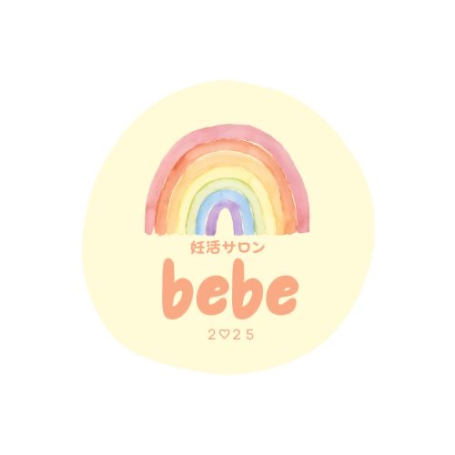
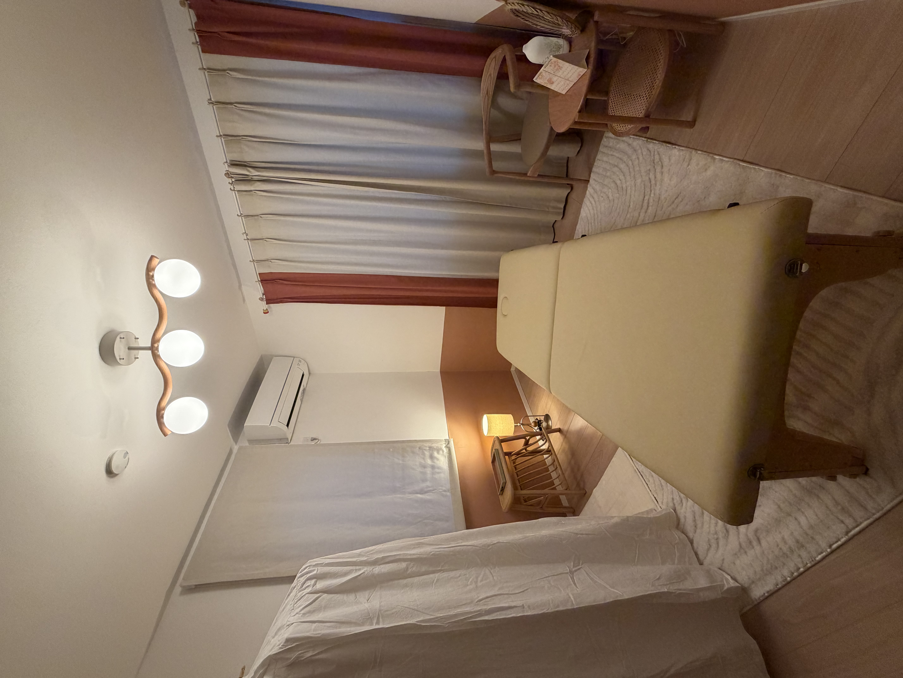
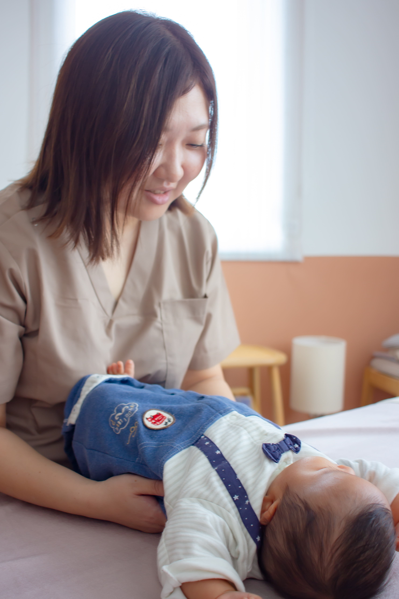

01
妊活サポート
妊活中だけれど、何をしたらいいかわからない。
病院での治療と並行して、自分でできることを知りたい。
一人ひとりに合った方法で、食事・睡眠・生活習慣などを見直し、
３～６ヶ月かけて無理なく体を整えていきます。
- ぽかぽか子宝整体
- 極上よもぎ蒸し
- 妊活ファスティング

salon bebe女性と赤ちゃんのための保健室KITAMI, HOKKAIDO ・ PRIVATE SALON
病院では聞きにくいことも ネットでは見つからない答えも
あなたの「ちょっと気になる」を 安心して話せる場所です

安心できる場所ありのままの自分に戻れる時間を
WELCOME TO BEBE
bebeはフランス語で「赤ちゃん」。
妊活中の女性がいつでもありのままの自分に戻り、身体のこと、治療のこと、
これからのことを話せる「妊活サポート」です。
妊活から妊娠、産後、ママと赤ちゃんへ。
ライフステージが変わっても、続けて頼れる存在でありたいと考えています。
OUR SUPPORT
気になることを、まだ上手に言葉にできなくても大丈夫です。
01
妊活中だけれど、何をしたらいいかわからない。
病院での治療と並行して、自分でできることを知りたい。
一人ひとりに合った方法で、食事・睡眠・生活習慣などを見直し、
３～６ヶ月かけて無理なく体を整えていきます。
02
妊娠中の身体の変化に寄り添い、痛みや不快感の軽減を目指します。
ママと赤ちゃんが心地よく過ごせる身体づくりを支えます。
03
出産を終えた身体の回復とリフレッシュを。
骨盤や肋骨まわりのケアを中心に、現在準備を進めています。
04
ママが感じる「あれ？」を大切に。
やさしいタッチでの施術と、ご家庭でできるケアをお伝えして
お子様の健やかな成長・発達を支えます。

ABOUT ME
はじめまして、サロンオーナーのみほです。
私自身、片道4時間かけて札幌まで通院し高度不妊治療を受けました。当時は妊活について相談できる場所が近くになく、どうにかして妊娠したい、何か出来ることはないかと市内の整体院や鍼治療院へ問い合わせたが、妊活分野の専門知識を学び提供している場所はありませんでした。
産後、ご縁があり分子栄養学やバイタルファスティング、日本妊活協会の考えや技術を学び、「今度は私が誰かの力になりたい」という想いから、自宅サロンを開きました。
一方通行のアドバイスではなく、同じ目線で話し
一緒に考えることを大切にしています。
FIRST VISIT
いきなり予約でなくても大丈夫。まずは相談から始められます。
Instagramやホームページで、考え方やメニューをご覧ください。
気になることや迷っていることを、気軽にお聞かせください。
公式LINE・Instagram DM・予約フォームからお申し込みいただけます。
落ち着いた完全予約制の空間で、丁寧にお話を伺います。
FAQ
優しいタッチでお腹・骨盤・内臓まわりのバランスを整え、赤ちゃんを迎えるための身体づくりを支える整体です。妊娠を保証する施術ではなく、今の身体と向き合うためのサポートです。
専用の酵素ドリンクを飲んで頂きます。期間や方法は、体調や生活に合わせて個別にご提案します。毎日のLINEサポートとカウンセリングを行い、自己流ではなく安全面に配慮して進めます。
はい。医療機関での治療を妨げるものではなく、治療と日常生活の間をつなぐサポートを目指しています。治療内容や体調に応じて、主治医への確認をお願いする場合があります。
身体の状態や目的によって異なります。初回にお話と状態を丁寧に確認し、無理のない目安をご案内します。
基本営業時間は9:00〜17:00、日曜・祝日がお休みです。看護師勤務の都合で不規則なため、最新の空き状況をご確認ください。
SALON INFO
女性と赤ちゃん専用の、自宅プライベートサロンです